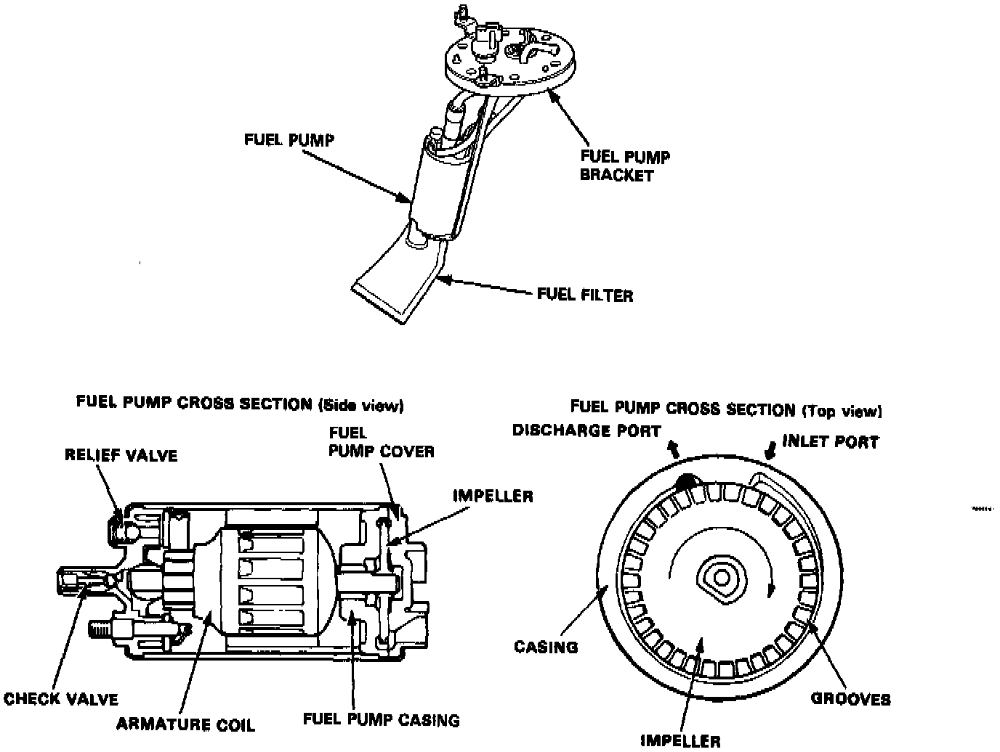

Fuel Pump: Description and Operation

PURPOSE
Because of its compact impeller design, the fuel pump is installed inside the fuel tank, thereby saving space and simplifying the fuel line system.
The fuel pump is comprised of a DC motor, a circumference flow pump, a relief valve for protecting the fuel line systems, a check valve for retaining residual pressure, an inlet port, and a discharge port. The fuel pump assembly consists of the impeller (driven by the motor), the fuel pump casing (which forms the pumping chamber), and the pump cover.
OPERATION
(1) When the engine is started, the PGM-FI main relay actuates the fuel pump, and the motor turns the impeller. Differential pressure is generated by the numerous grooves around the impeller.
(2) Fuel entering the inlet port flows inside the motor from the pumping chamber and is forced through the discharge port via the check valve. If fuel flow is obstructed at the discharge side of the fuel line, the relief valve will open to bypass the fuel to the inlet port an prevent excessive fuel pressure.
(3) When the engine stops, the fuel pump stops automatically. However, a check valve closes by spring action to retain the residual pressure in the line, helping the engine to restart more easily.